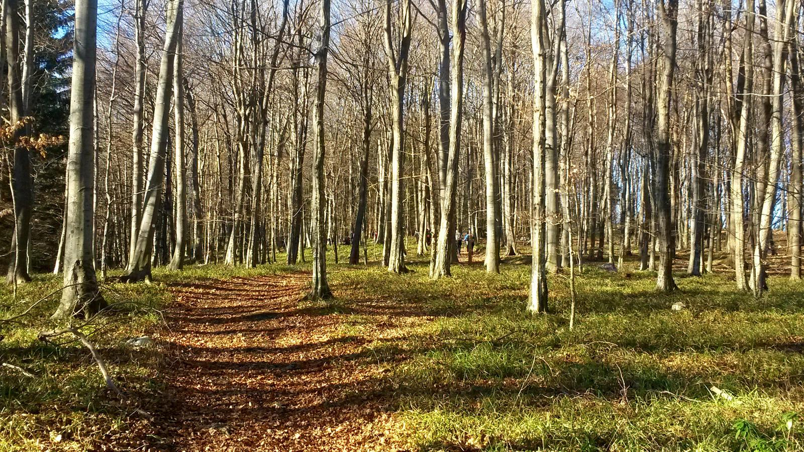
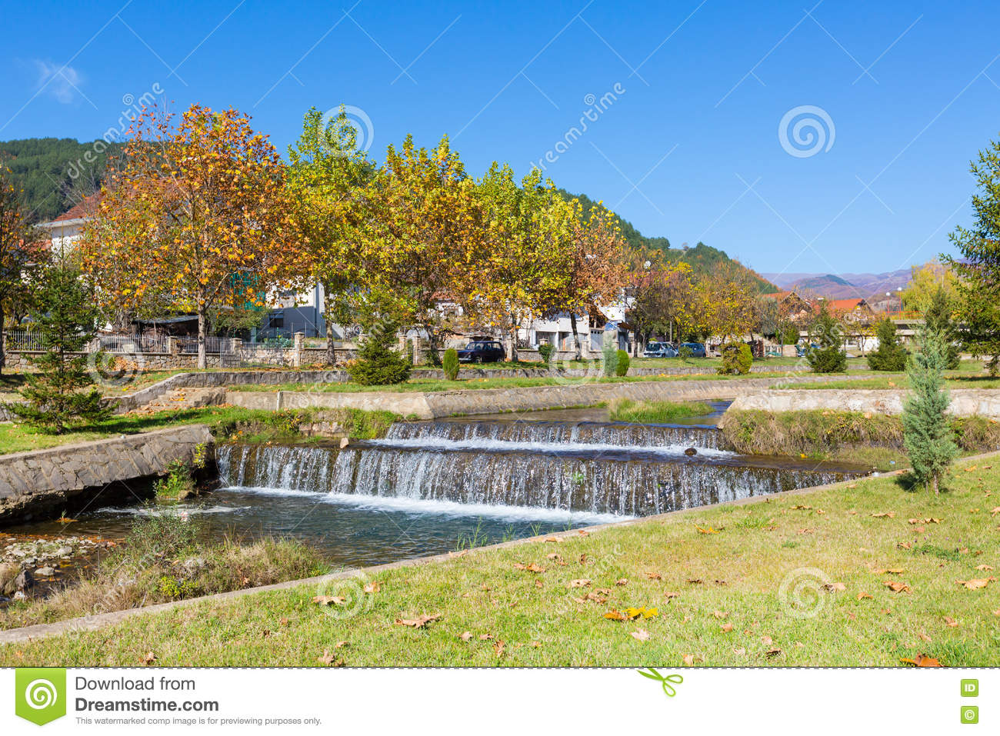

- 
- 
-

Македонска Каменица град во источниот дел на Република Македонија. Се наоѓа во подножјето на Осоговските Планини на нивната јужна падина. Познат е како рударски град. Најпознатиот македонски рудник за олово и цинк Саса е во неговата непосредна близина. Како град е прогласен во 2004 година. Седиште е на истоимената општина, која зафаќа површина од 19.037 ха, има 9 населени места со вкупно 8.110 жители. Според пописот од 2002 година, градот има 5.147 жители.
Името Каменица потекнува од име на река, неговото занчење е „вода што тече во каменесто корито“. Во минатото името на селото е документирано во еден запис од 1566 година, како Камена Река,[1] од која потекнува и првиот познат македонски печатар Јаков, кој во 1566 г. печати свои книги во Венеција.Главна стопанска дејност на населението е рударството, покрај рудникот Саса, во градот работат и текстилни погони и цинкара.Шумски плодови, габи.
Градоначалник на општина Македонска Каменица е Соња Стаменкова од редовите на СДСМ. Таа бил избрана на локалните избори од 2017 година за мандат од четири години. година.
Работата околу рестартирањето успешно ја водеше менаџерски тим и стручњаци од различни области кои и претходно работеле во рудникот со што се постигна основната цел
Времето денеска ќе биде сончево и постудено со мала до умерена облачност и со слаб до умерен ветер од северен правец, особено изразен во југоисточните делови. Максималната температура ќе се движи од 2 до 9 степени.
10
Дек.

За прв пат Каменица се спомнува во турските записи, како село во 1570-1573. Градот е основан пред 1950 година, којшто во почетокот бил само населба за рударите, кои работеле во рудникот Саса.
30
Окт.
За прв пат Каменица се спомнува во турските записи, како село во 1570-1573. Градот е основан пред 1950 година, којшто во почетокот бил само населба за рударите, кои работеле во рудникот Саса.
13
Март.

За прв пат Каменица се спомнува во турските записи, како село во 1570-1573. Градот е основан пред 1950 година, којшто во почетокот бил само населба за рударите, кои работеле во рудникот Саса.
15
Јан.

За прв пат Каменица се спомнува во турските записи, како село во 1570-1573. Градот е основан пред 1950 година, којшто во почетокот бил само населба за рударите, кои работеле во рудникот Саса.
X
Во Македонска Каменица има едно основно училиште ОУ "Кирил и Методиј", во чиј дел спаѓаат и подрачните училишта од околината, едно средно училиште СОУ „Миле Јаневски-Џингар“. Градот има кино сала, која служи за сите поголеми културни случувања. Покрај ова, има и библиотека со 6.500 книги, Дом на културата и Центар за културно-уметничка издавачка дејност